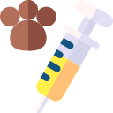

Vacunación de mascotas
Este servicio que se presta bajo chequeo clinico veterinario previo para un ciclo de vacunación completo de la mascota y medicación de acuerdo con la patología a tratar. Si su mascota tiene historial de vacunación (Carné de vacunación) se recomienda taerlo a la consulta para actualizar su historial clínico.